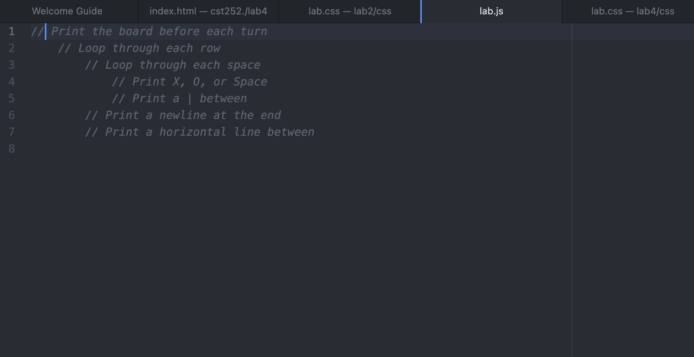

Lab 4 - Pseudocoding and Problem-Solving
The objective of this lab was to help create a local file structure and add an html file
Challenges
Trying to figure out how word the tasks into javascript was difficult. I didn't quite understand how to properly
print task 3 on the list in a readable javascript comment, so I am hoping it turned out ok.
Results
Results: Googling javascript transitions allowed me to see how
different people coding and worded their code phrases in a JS document.
List of Tasks
Task 1
1.Get your Eggs and pan ready.
3.Adjust the temperature until oil is hot enough.
4.Cook egg until whites no longer wet
5.Season eggs if you want
Task 2
1.Pick what button transition style you are going for.
2.Write css/html code for hover in your preferred program.
3.Adjust the size and timing of the effect of the hover.
4.Test locally before testing online.
5.Verify the hover effect shows up on the button when the user hovers over.
6.Receive feedback from users on their experience.
Task 3
Print a newline at the end.
Print a horizontal line between.

CST252 Homepage